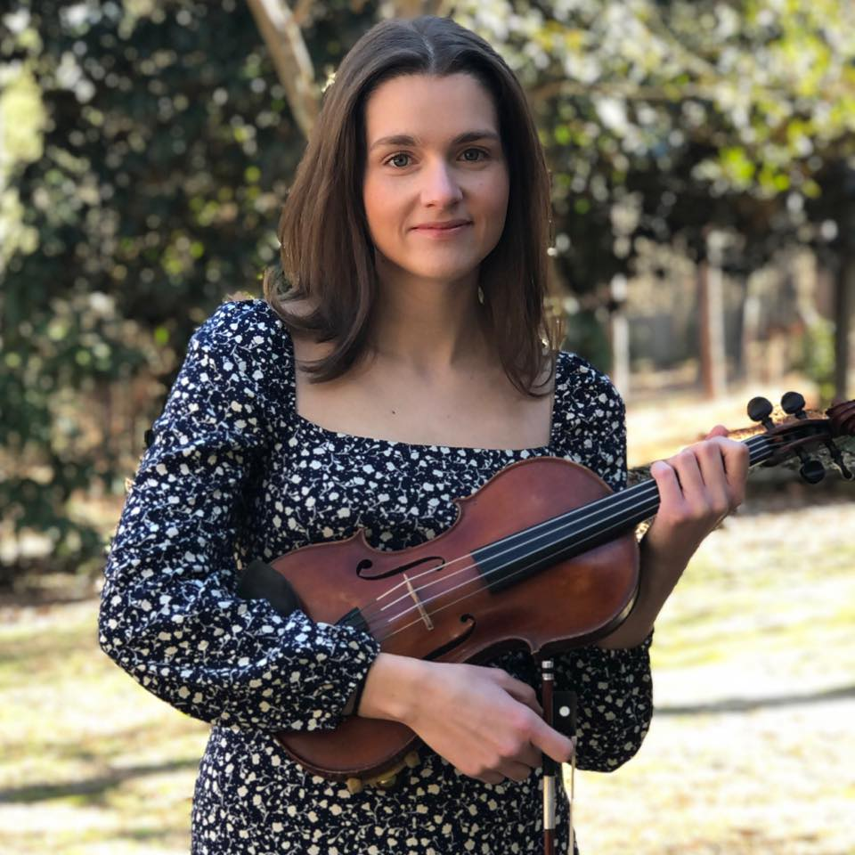

Mallory is a professional violinist located in the Fayetteville, NC area. She has over 25 years experience playing the violin and over 10 years experience teaching and performing professionally. She has performed all over North Carolina, most notably with the North Carolina Symphony, and held the Principal Second Violin position with the Spartanburg Philharmonic Orchestra, the youngest member to hold this position in the symphony's history. While she is classical trained, She enjoys playing a variety of genres, including bluegrass, irish fiddle, folk, and even pop. In addition to the violin, she can play the guitar, piano, and ukulele, and enjoys performing alongside her talented husband, Brett Phillips.
Mallory was amazing to work with, a great communicator and most of all a great artist. She played everything perfectly!! Recommend 100%.
The music she selected was calming, beautiful and added so much to our service. My congregation was very impressed with her music and ability! It was our honor to have her at our service and I highly recommend using her if you need a highly qualified violinist! She arrived on time, was always available via email and had such a pleasant attitude...I would give her 6 star rating if I could! You will be glad if you hire her!
Mallory was prompt, professional, flexible, and incredible. She gave the ceremony exactly the right finishing touch and even played some off-beat requests of ours.